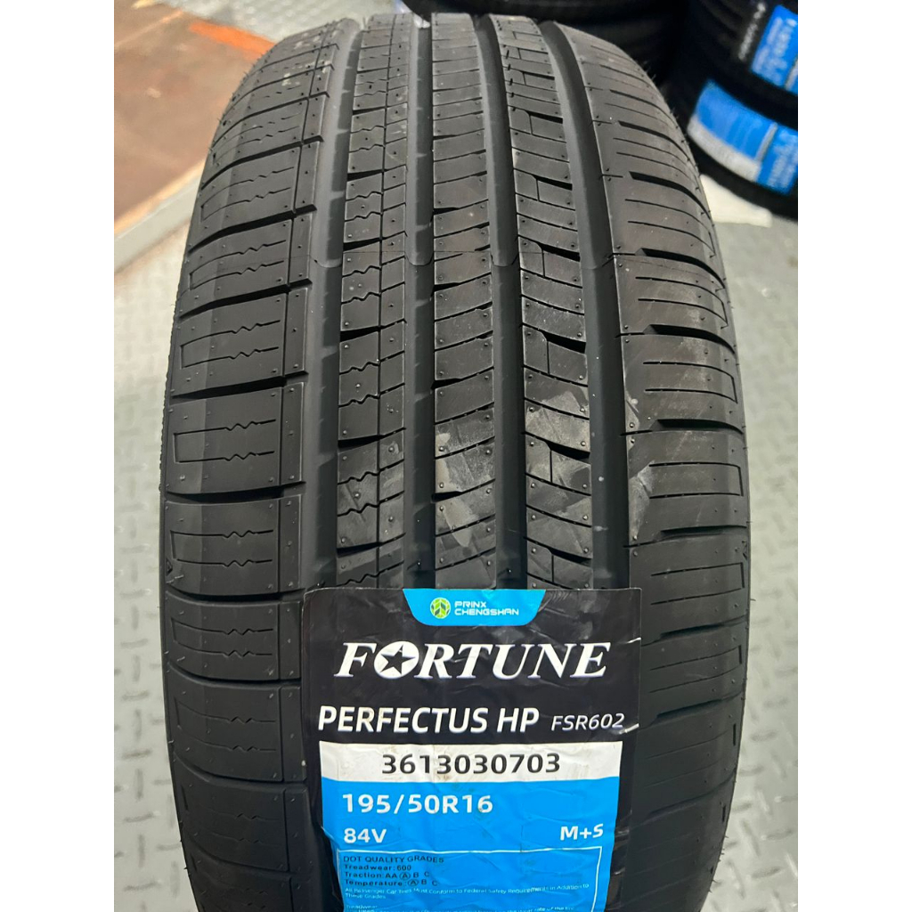

Fortune Perfectus FSR602 195/50R16

RM 165.00
Fortune Perfectus FSR602 is a passenger car touring tyre designed to deliver driving comfort, reliable handling and balanced everyday performance. Its asymmetric tread pattern promotes effective water drainage, stable cornering and dependable wet and dry traction, while the optimized tread design helps reduce road noise. Tyre Size: 195/50R16 Key Features: * Asymmetric tread pattern * Reliable wet and dry grip * Comfortable and quiet driving * Effective water drainage * Stable handling and cornering * Suitable for daily city and highway driving * Excellent value for money
Klang Hock Li Tyre Services Sdn Bhd, Klang, Selangor, Malaysia.
View live product details and enquire